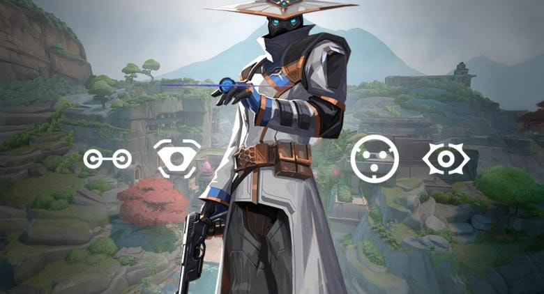

Cypher, Mata-mata Abadi Valorant: Mengungkap Seluk-beluk Sang Sentinel dari Maroko

Siapa Cypher di Valorant?
Dalam dunia Valorant yang penuh intrik dan pertempuran taktis, Cypher menjadi salah satu karakter paling ikonik dan penuh misteri. Dijuluki sebagai “one-man surveillance network,” Cypher adalah Sentinel asal Maroko yang keahliannya dalam mengumpulkan informasi sekaligus mengendalikan peta membuatnya jadi ancaman serius bagi siapa saja yang menghadangnya. Artikel ini akan membahas secara lengkap tentang Cypher, mulai dari latar belakang, lore, keunikan gameplay, hingga strategi tingkat tinggi yang menjadikannya pilihan utama di berbagai level permainan.
Latar Belakang dan Lore Cypher
1. Asal Usul dan Identitas
Cypher, dengan nama asli Aamir, berasal dari Rabat, Maroko. Ia dikenal sebagai broker informasi yang sangat misterius, identitas serta masa lalunya hampir tidak diketahui oleh rekan-rekannya di VALORANT Protocol. Kehidupannya penuh rahasia, dan ia selalu menutupi wajahnya dengan topeng dan kacamata khas, sehingga menjadi sosok yang sulit ditebak dan penuh teka-teki.
“Cypher adalah agen ke-5 yang bergabung dengan VALORANT Protocol. Ia menggunakan alat pengawasan canggih untuk memantau setiap gerak-gerik musuh. Tidak ada rahasia yang aman darinya.”
2. Kisah Pribadi dan Tragedi
Sebelumnya, Cypher menjalani hidup bahagia bersama istrinya, Nora, dan anak mereka. Namun, semuanya berubah drastis akibat musuh-musuh yang ia kumpulkan selama menjadi pengumpul informasi serta keterlibatannya dalam dunia perjudian gelap. Demi melindungi keluarganya dari ancaman yang terus mengintai, ia memilih menyembunyikan identitas asli. Tragisnya, ia kehilangan keluarganya dalam sebuah tragedi yang tidak pernah dijelaskan secara gamblang dalam lore Valorant.
3. Peran di VALORANT Protocol
Sebagai anggota VALORANT Protocol, Cypher berperan sebagai pengumpul informasi utama. Brimstone kerap meminta bantuannya untuk menyelidiki masa lalu agen lain, termasuk Chamber, bahkan untuk menghapus rekaman pengawasan demi melindungi rekan satu tim. Keahliannya membuatnya dipercaya sekaligus dicurigai oleh beberapa agen lain karena kebiasaannya menyimpan rahasia pribadi.
Kepribadian dan Hubungan dengan Agen Lain
Cypher dikenal sebagai sosok yang penuh teka-teki dan sering membuat rekan-rekannya waspada. Ia sangat gemar mengetahui rahasia orang lain, termasuk hal-hal pribadi seperti nama asli Viper hingga password tiap agen, membuatnya sulit dipercaya oleh beberapa rekan, seperti Sova yang sangat menjunjung tinggi kejujuran dan transparansi.
Selain itu, Cypher memiliki hubungan unik dengan beberapa agen lain seperti:
- Omen: Pernah membuat perjanjian rahasia untuk bertukar informasi.
- Killjoy: Sering meminjam—atau mengambil tanpa izin—peralatan teknologi Killjoy untuk memperbarui gadget-nya.
- Raze: Suka mengutak-atik kamera Cypher hingga terkadang meledak.
- Breach: Pernah mengambil servo dari lengan Breach untuk membuat tripwire, meski akhirnya mereka saling menghormati sebagai profesional.
Peran Cypher dalam Gameplay Valorant
1. Kelas Sentinel: Penjaga Informasi
Cypher adalah Sentinel, yang berarti fokusnya adalah pertahanan, pengamanan area, dan pengumpulan informasi. Ia bukan tipe “fragger” yang berburu kill, melainkan otak di balik pertahanan tim, mengatur dan memantau medan tempur dengan cermat.
2. Kemampuan Utama Cypher
Berikut kemampuan Cypher yang membuatnya unik dan berbahaya:
- Trapwire
Menempatkan kabel jebakan tersembunyi di antara dua permukaan. Saat musuh melewati, mereka terungkap dan terkena efek immobilize, sehingga mudah diserang. Sangat efektif untuk mengamankan flank dan choke point. - Cyber Cage
Melempar perangkat yang menciptakan zona penghalang penglihatan sekaligus memperlambat musuh yang melewati. Bisa diaktifkan jarak jauh, cocok untuk menghalangi rush musuh atau menutup area saat retake. - Spycam
Kamera pengintai yang dapat ditempatkan di mana saja pada peta. Cypher mengontrol kamera tersebut, melihat area, dan menandai musuh dengan dart pelacak yang mengungkap posisi mereka untuk sementara waktu. Ini adalah alat pengumpulan informasi paling kuat di game. - Neural Theft (Ultimate)
Setelah membunuh musuh, Cypher menggunakan mayatnya untuk mengungkap lokasi seluruh musuh yang masih hidup di peta. Ultimate ini kerap menjadi penentu kemenangan pada ronde-ronde penting karena memberi informasi vital secara instan.
Strategi Bermain Cypher
1. Pertahanan (Defense)
Cypher sangat kuat saat bertahan. Dengan Trapwire dan Spycam, dia mampu mengunci satu site sendirian, memberikan waktu bagi tim untuk rotasi atau bertahan. Berikut tipsnya:
- Tempatkan Trapwire di lokasi tersembunyi, misalnya sudut gelap atau bawah objek agar sulit ditemukan musuh.
- Manfaatkan Spycam untuk mendapatkan informasi awal atau memantau area yang tidak bisa dijaga langsung.
- Gabungkan Cyber Cage dengan Trapwire untuk menjebak dan mengeliminasi musuh secara efektif.
2. Penyerangan (Attack)
Meski lebih efektif di sisi pertahanan, Cypher juga bisa berkontribusi saat menyerang dengan menjaga flank dan memberi informasi pergerakan musuh:
- Pasang Trapwire di area flank untuk mencegah musuh melakukan backstab.
- Gunakan Spycam untuk mengintip site sebelum melakukan eksekusi.
- Cyber Cage dapat dipakai menutup vision saat plant atau retake agar lebih aman.
3. Penggunaan Ultimate yang Efektif
- Aktifkan Neural Theft segera setelah mendapatkan kill di awal ronde untuk mengungkap posisi seluruh musuh.
- Gunakan ultimate di momen clutch atau saat tim sangat membutuhkan info rotasi musuh dengan cepat.
Tips dan Trik dari Pro Player
Para pro player dan streamer sering membagikan strategi berikut agar Cypher bisa dimaksimalkan potensinya:
- Tempatkan kamera dengan kreatif, jangan di spot yang mudah ditebak, cari lokasi tersembunyi tapi tetap beri sudut pandang luas.
- Double Trapwire, jika musuh sering lewat di jalur tertentu, pasang dua trapwire di area sama untuk menjebak mereka berulang kali.
- Lurk dan rotasi, Cypher sangat efektif sebagai lurker yang memantau pergerakan musuh dan memberi info rotasi ke tim.
- One-way Cage, manfaatkan Cyber Cage sebagai one-way smoke agar kamu bisa intip musuh tanpa terlihat.
Evolusi Cypher di Meta Valorant
Sejak awal rilis Valorant, Cypher telah mengalami berbagai penyesuaian balancing. Dulu Spycam bisa menembak musuh, sekarang fokus pada pengumpulan informasi. Meski pernah tergeser oleh Sentinel lain seperti Killjoy dan Chamber, Cypher tetap menjadi favorit banyak pemain di berbagai map karena fleksibilitas dan kemampuannya mengamankan flank secara global.
Lore, Motivasi, dan Dilema Moral
Cypher bukan cuma karakter gameplay, tapi punya narasi mendalam. Ia digambarkan sebagai sosok yang rela melakukan apa saja demi melindungi keluarganya, walau harus mengorbankan moralitasnya sendiri. Ia kerap dihadapkan pada dilema antara loyalitas kepada tim dan kebutuhan menjaga rahasia pribadinya.
“Cypher adalah pengumpul informasi ulung, tapi setiap rahasia yang ia tahu adalah beban yang harus ia tanggung sendiri.”
Analisis Peran Cypher dalam Tim Kompetitif
Di level profesional, Cypher kerap dipilih untuk map seperti Split, Bind, dan Fracture, yang memiliki banyak jalur flank. Keberadaan gadgetnya memungkinkan tim bermain lebih agresif di site lain karena flank sudah aman dikontrol.
Kelebihan:
- Memberikan informasi real-time dan kontrol peta yang luar biasa.
- Bisa mengunci site sendirian tanpa bantuan.
- Ultimate sangat menentukan di saat-saat krusial.
Kekurangan:
- Gadget rentan dihancurkan oleh musuh.
- Kurang mobilitas dan kemampuan menyerang secara langsung.
- Bergantung pada penempatan gadget yang cerdas dan tepat.
Trivia dan Fakta Menarik Cypher
- Cypher sangat membenci organisasi Kingdom, yang ia anggap bertanggung jawab atas kehancuran rumahnya di Maroko.
- Suka bermain catur, mencerminkan kecerdasannya dalam menyusun strategi.
- Sering jadi bahan candaan di antara agen lain karena sifatnya yang suka “kepo” dan tahu hampir semua rahasia tim.
Panduan Map untuk Cypher
Setiap map di Valorant membutuhkan penempatan gadget yang berbeda. Contoh penempatan efektif:
- Bind: Trapwire di teleporter dan hookah, Spycam di atas pintu B.
- Split: Trapwire di mid vent dan B heaven, Spycam di A rafters.
- Ascent: Trapwire di mid catwalk dan B main, Spycam di atas generator B.
Masa Depan Cypher di Valorant
Dengan terus berkembangnya meta dan munculnya agen baru, Cypher tetap relevan berkat kemampuannya yang unik dan serbaguna. Riot Games pun kerap melakukan penyesuaian agar Cypher tetap seimbang dan menarik dimainkan di semua level, dari casual hingga kompetitif.
Cypher bukan hanya sekedar Sentinel di Valorant. Ia adalah simbol kecerdasan, pengorbanan, dan misteri. Baik dari sisi lore maupun gameplay, Cypher membuktikan bahwa informasi adalah senjata paling mematikan. Jika kamu serius ingin menguasai Valorant secara taktis, memahami dan menguasai Cypher adalah langkah wajib.
Untuk mendukung pengalaman bermainmu, jangan lupa Top Up Valorant di Topupgim agar selalu siap dengan berbagai item dan upgrade terbaik. Dengan persediaan yang cukup, kamu bisa fokus memaksimalkan kemampuan Cypher di medan tempur tanpa hambatan.